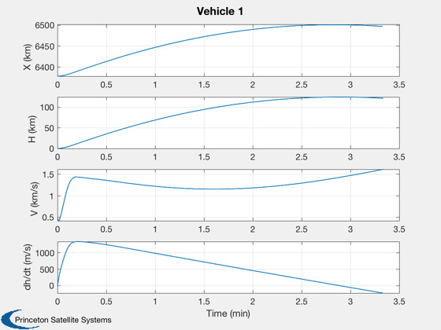
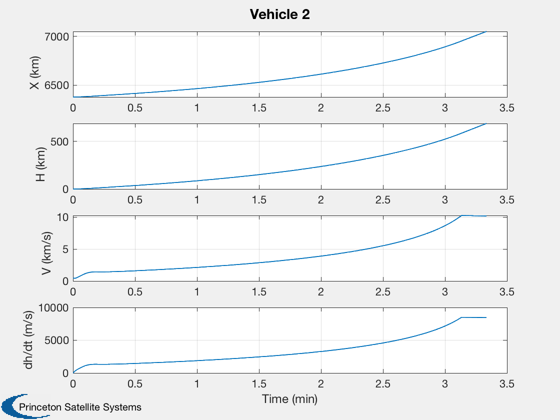
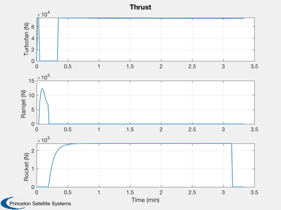

End-to-end TSTO launch simulation.
This simulates a two stage to orbit vehicle (TSTO). The first stage
has a turbofan engine and a ramjet. The second stage is a
LO2/LH2 engine. The second stage reaches 380 km goes into a circular
orbit and then reenters.
Each vehicle has time-varying mass. The propulsion functions are
external. The second stage is flown back to the ground.
------------------------------------------------------------------------
See also MixedFlowTurbofan, Ramjet, RamjetH2, MachNo, RocketH2, UE,
AtmScaleHeightsStdAtm, RHSTSTO, Plot2D, TimeLabl, ECIToNED, Cross, Dot, Mag,
RK4, Unit, FPA
------------------------------------------------------------------------
Contents
nSim = 200;
dT = 1;
kmToM = 1000;
g = 9.806;
ramjetOn = 0;
rocketOn = 0;
kSeparation = inf;
rPlanet = 6378.165;
mu = 3.9860036e5;
omega = 2*pi/86400;
d.separated = 0;
mFuel1H2 = 1000;
mFuel1JP = 1000;
mFuel2 = 10000;
mFuel1 = mFuel1H2 + mFuel1JP;
d.vehicle1.alpha = 5*pi/180;
d.vehicle1.l = 10;
d.vehicle1.sRef = 20;
d.vehicle1.oswaldEff = 0.95;
d.vehicle1.aspectRatio = 6;
d.vehicle1.thickness = 0.01;
d.vehicle1.cLAlpha = 10;
d.vehicle1.massDry = 10000;
d.vehicle1.mHyper = 7;
d.vehicle1.force = [0;0;0];
d.vehicle1.mDot = 0;
d.vehicle1.omega = omega;
d.vehicle1.mu = mu;
d.vehicle1.rPlanet = rPlanet;
d.vehicle2.alpha = 0;
d.vehicle2.l = 10;
d.vehicle2.sRef = 20;
d.vehicle2.oswaldEff = 0.95;
d.vehicle2.aspectRatio = 6;
d.vehicle2.thickness = 0.01;
d.vehicle2.cLAlpha = 10;
d.vehicle2.massDry = 1000;
d.vehicle2.mHyper = 7;
d.vehicle2.force = [0;0;0];
d.vehicle2.mDot = 0;
d.vehicle2.omega = omega;
d.vehicle2.mu = mu;
d.vehicle2.rPlanet = rPlanet;
r0 = rPlanet;
r = [r0;0;0];
v = Cross(r,[0;0;omega]);
x = [r;v;mFuel1;r;v;mFuel2];
Store plot points in x
x = [x zeros(length(x),nSim)];
thr = zeros(3,nSim+1);
Create the turbofan model
turbofan = MixedFlowTurbofan( 'struct' );
MixedFlowTurbofan( 'initialize', turbofan );
control.afterburner = 0;
control.throttleRatio = 1;
control.tT4 = turbofan.tT4;
control.tT7 = turbofan.tT7;
Ramjet
ramjet = RamjetKerrebrock;
ramjet.aInlet = 2.0;
Rocket
rocket = RocketH2O2( 'struct' );
Velocity orientation
az = 0;
fPAClimb = 5*pi/180;
mRamjet = 1.5;
mSeparation = 5.5;
hSeparation = 60;
omega = [0;0;omega];
Control initialization
glide = 0;
turbofanOn = 1;
Run the sim
for k = 1:nSim
r = x(1:3,k);
v = Mag(x(4:6,k) - Cross(r,omega));
h = Mag(r) - rPlanet;
[rho,speedOfSound,nu,pressure,temperature] = AtmScaleHeightsStdAtm( h );
p.speedOfSound = speedOfSound;
p.temperature = temperature;
machNo = v*kmToM/speedOfSound;
if( h <= 0.001 )
fPA = 0;
else
fPA = fPAClimb;
end
uNED = [cos(fPA)*sin(az);cos(fPA)*cos(az);-sin(fPA)];
uECI = ECIToNED(r)'*uNED;
if( machNo > mSeparation || h > hSeparation )
d.separated = 1;
rocketOn = 1;
ramjetOn = 0;
glide = 1;
elseif( machNo > mRamjet && ~glide )
turbofanOn = 0;
ramjetOn = 1;
else
turbofanOn = 1;
ramjetOn = 0;
end
thrustTurbofan = 0;
thrustRamjet = 0;
thrustRocket = 0;
if( turbofanOn )
[thrustTurbofan, tSFC] = MixedFlowTurbofan( 'update', v, h, control );
d.vehicle1.force = thrustTurbofan*uECI;
d.vehicle1.mDot = -thrustTurbofan*tSFC;
elseif( ramjetOn )
[thrustRamjet, iSp] = RamjetKerrebrock( v*kmToM/p.speedOfSound, ramjet, p );
d.vehicle1.force = thrustRamjet*uECI;
d.vehicle1.mDot = -thrustRamjet/(g*iSp);
else
d.vehicle1.force = [0;0;0];
d.vehicle1.mDot = 0;
end
if( rocketOn && x(14,k) > 0 )
[thrustRocket, uE] = RocketH2O2( rocket.p0, pressure, rocket.aStar, rocket.aE, rocket.f, rocket.tP );
d.vehicle2.force = Unit(x(11:13,k))*thrustRocket;
d.vehicle2.mDot = -thrustRocket/uE;
else
d.vehicle2.force = [0;0;0];
d.vehicle2.mDot = 0;
end
thr(:,k+1) = [thrustTurbofan;thrustRamjet;thrustRocket];
x(:,k+1) = RK4( @RHSTSTO, x(:,k), dT, 0, d );
end
x = x(:,1:(k+1));
Create the time array and label
[t, tL] = TimeLabl( (0:k)*dT );
Plot the states
yL = {'X (km)' 'H (km)' 'V (km/s)' 'dh/dt (m/s)'};
Vehicle 1
dhdt = Dot(Unit(x(1:3,:)),x(4:6,:))*1000;
h = Mag(x(1:3,:)) - rPlanet;
Plot2D( t, [x(1,:);h;Mag(x(4:6,:));dhdt], tL, yL, 'Vehicle 1');

Vehicle 2
dhdt = Dot(Unit(x(8:10,:)),x(11:13,:))*1000;
h = Mag(x(8:10,:)) - rPlanet;
Plot2D( t, [x(8,:);h;Mag(x(11:13,:));dhdt], tL, yL, 'Vehicle 2');

Thrust
Plot2D( t, thr, tL, {'Turbofan (N)', 'Ramjet (N)', 'Rocket (N)'}, 'Thrust');

Fuel
Plot2D( t, x([7 14],:), tL, {'First Stage (kg)', 'Second Stage (kg)'}, 'Fuel');